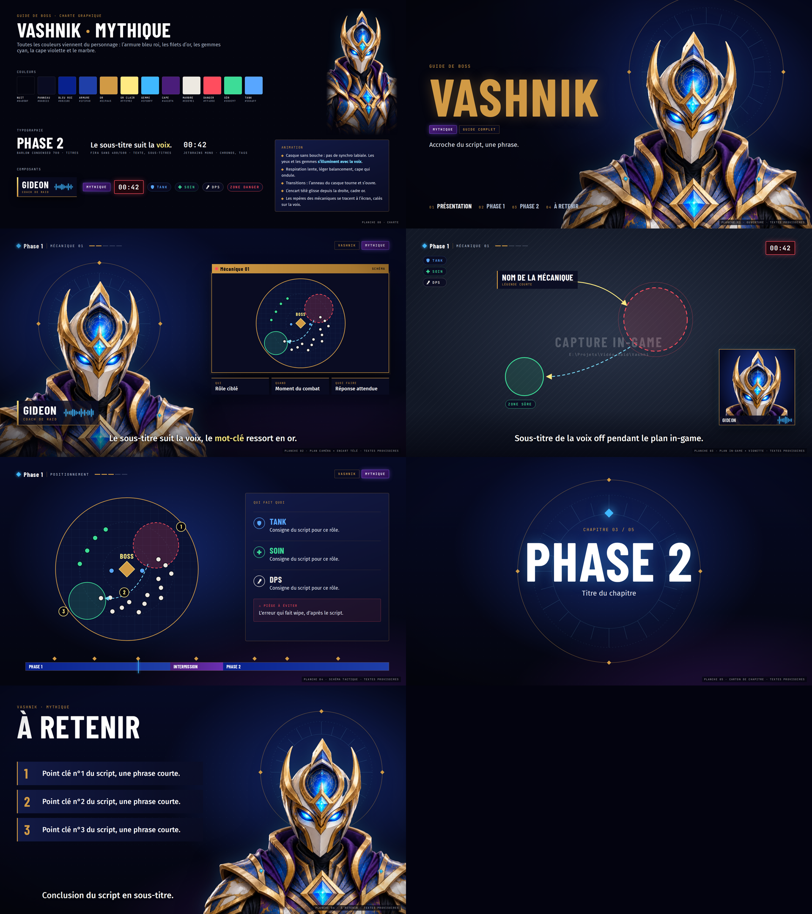
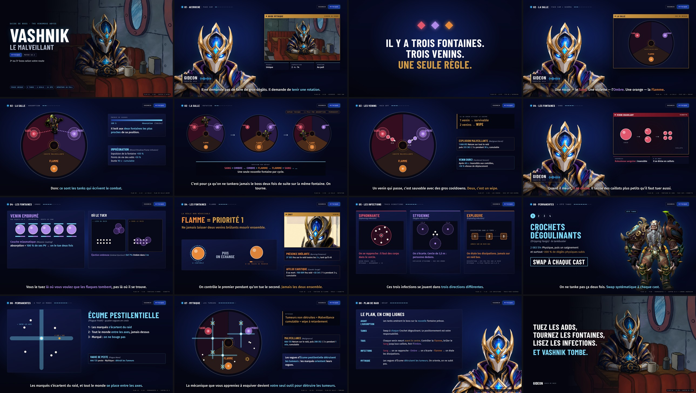

GUIDE DE BOSS · DOSSIER DE CRÉATION
VASHNIK
Le Malveillant
MYTHIQUE
STRAT EXPRESS
Direction artistique de la vidéo guide présentée par Gideon : charte, personnages, composants, plan de salle, mouvement, son, planches et découpage.
2 min 55 · 1920 × 1080 · 30 i/s · −16 LUFS · septembre 2026
Dossier de créa · Vashnik strat express02 · L'intention
Une émission, trois plans
Un présentateur face caméra parle du sujet, un encart télé montre la mécanique pendant qu'il parle, puis le plan de salle vu de dessus la montre en mouvement. Le spectateur doit pouvoir suivre une fontaine sans lire, juste à la couleur.
1 · Face caméra + encart télé
2 · Vignette de mécanique dans l'encart
3 · Plan de salle schématique
| Format | Durée | Ton | Source du texte | Chiffres |
|---|
| 16:9 · 1920 × 1080 · 30 i/s | 2 min 55 (§9 du script) | Direct, technique, sans condescendance | Chaque phrase vient du script | Ceux de l'annexe §10, jamais arrondis |
Dossier de créa · Vashnik strat express03 · Les personnages
Les personnages
Le présentateur
Gideon coach de raid
- Armure bleu roi et or, gemmes cyan, cape violette, casque sans bouche.
- Pas de synchro labiale : les yeux et les gemmes s'allument au rythme de la voix.
- Respiration lente (4,4 s). Il ne « joue » pas.
Le boss
Vashnik le Malveillant
Sur le plan : médaillon cerclé d'or (la couleur du danger). Pendant l'Absorption : carte du boss.
Côté tanks
L'ingénieur
L'orc fourni sur fond vert, détouré. Il illustre Crochets dégoulinants : les tanks swap à chaque cast.
Dossier de créa · Vashnik strat express04 · Les couleurs
Les couleurs
La base vient du personnage. Les couleurs des mécaniques viennent du script (§2.1), identiques à l'overlay de la guilde.
Base · personnage et habillage
Les trois fontaines
| Fontaine | Zone (script) | Texte sur la nuit |
|---|
| SANG | #8E1B2E | #E0566D |
| OMBRE | #6B3FA0 | #B08AE8 |
| FLAMME | #D1701F | #E8893A |
Les règles
- Cyan = technique, or = danger (WIPE compris), une couleur par fontaine.
- Quand une fontaine est nommée, son mot prend sa couleur, sous-titres compris.
- Badge Mythique bleu : le violet appartient à l'Ombre.
- Le rouge « danger » et le vert « zone sûre » des planches sont retirés de la vidéo.
Dossier de créa · Vashnik strat express05 · La typographie
La typographie
Barlow Condensed 700 · titres, sorts, chapitres · capitales
Explosion malveillante
Fira Sans 400 / 500 · texte courant, sous-titres (38 px), valeurs
Le Sang est insensible aux contrôles, et quand il meurt, il se divise.
(Malignant Burst) — le nom anglais, en italique gris, après le nom français
JetBrains Mono · étiquettes, badges, chronos · capitales espacées
Face cam·Vers le centre·1 666 813·Mythique
Dossier de créa · Vashnik strat express06 · Les composants
Les composants
Où les trouver
Tous les composants sont définis dans production/vashnik-express/style.css ; leur construction et leurs animations dans video.js.
Dossier de créa · Vashnik strat express07 · Le plan de salle
Le plan de salle
Un seul dessin qui vit de 0:16 à 1:07
- Trois tiers : Sang en haut à gauche, Ombre en haut à droite, Flamme en bas, chacun avec sa fontaine.
- Au centre, la Cavité malveillante : cercle pointillé or, le point de défaite.
- Les fontaines s'allument quand elles sont nommées.
- Le médaillon de Vashnik entre, boit aux deux fontaines les plus proches, puis tourne : Sang+Ombre → Ombre+Flamme → Flamme+Sang.
- Les venins rampent vers la Cavité : un venin = survivable, deux = tampon WIPE.
- En Mythique : les tumeurs, puis les vagues d'Écume en croix qui les détruisent.
Dossier de créa · Vashnik strat express08 · Mouvement et son
Tout est calé sur la voix
Les plans commencent et finissent sur les phrases de la voix off ; chaque apparition tombe sur le mot qui la déclenche.
Les plans · 0 → s
Les 23 phrases de la voix off
Le mouvement
- Fondu enchaîné de 0,35 s entre les plans.
- Sortie cubique pour les entrées, entrée cubique pour les sorties, léger rebond pour ce qui se pose.
- Sous-titres : une ligne à la fois, coupée à la ponctuation, jamais de « : » en début de ligne.
- Fin : lent zoom de 5 % sur le diner, fondu au noir de 1,2 s.
Le son
- Voix : 0,5 s entre deux phrases, 1,4 s entre deux scènes.
- Fond en fa mineur, 72 BPM (Fm – D♭ – A♭ – E♭), qui s'efface sous la voix (≈ −9 dB).
- Bruitages calés sur les animations : souffles, clochettes des fontaines, impacts des venins et du WIPE, « chut » de Gideon.
- Master : −16,0 LUFS intégrés, crête −2,1 dBFS.
Dossier de créa · Vashnik strat express09 · Les planches validées
Les 7 planches validées
Charte · ouverture · caméra + encart · in-game · schéma · chapitre · à retenir — textes provisoires

Dossier de créa · Vashnik strat express10 · Le découpage 12 min
Le découpage de la version 12 minutes
16 images clés d'après le script · le boss y est encore provisoire · version longue pas encore produite

Dossier de créa · Vashnik strat express11 · La vidéo finale
La vidéo finale, image par image
Dossier de créa · Vashnik strat express12 · Les règles
Les règles de contenu
À respecter dans toute vidéo
- Ne jamais montrer de données personnelles : pseudos réels, messages privés, identifiants de compte, de guilde ou de serveur, clés d'API.
- Éviter les phrases que liste l'auteur (voir CLAUDE.md).
- Ne rien inventer : aucun chiffre, aucune fonctionnalité, aucun témoignage qui ne soit pas dans le script.
- Ne pas arrondir, ne pas reformuler en « environ » si le chiffre est exact.
- Noms de sorts en français, tels qu'ils s'affichent en jeu, nom anglais entre parenthèses.
Encore ouvert
- Orthographe du boss : « Vashnik » (script, vidéo) ou « Vashniek » ?
- Version 12 min : chiffre arrondi de la section 3 (1 666 813 dans l'annexe).
- Voix de travail (Kokoro) ou voix enregistrée (vo/rec/) ?
Détails : DOSSIER_CREA.md · Fabrication : ANNEXE_CREATION_VIDEO.md